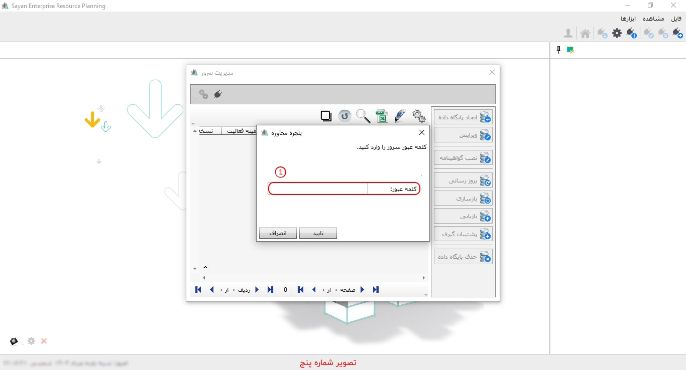

زمانی که نرم افزار سایان را اجراء می کنید تصویر زیر پنجره ی «ایجاد ارتباط» نمایش داده می شود.
برای ادامه مطلب به تصویر شماره دو مراجعه نمایید.

-تنظیمات و ارتباط با سرور(کادر شماره یک): در این بخش شما میتوانید مشخصات اتصال نرمافزار به پایگاهداده را وارد کنید.
برای ادامه مطلب به تصویر شماره سه مراجعه نمایید.
-نام سرور(کادر شماره یک): در این قسمت نام اس.کیو.الی را که برای کار با نرم افزار به آن متصل می شوید را مشاهده می کنید حال ممکن است از طریق شبکه به اس.کیو.ال متصل شوید و یا اس.کیو.ال بر روی سیستم شما نصب شده باشد.
نکته: زمانی که کشوی نام سرور را کلیک می کنید، اندکی صبر نمایید سیستم به صورت خودکار نام سرور را جست و جو می کند.
-نحوه ارتباط با سرور(کادر شماره دو): پس از شناسایی سرور، میتوانید نحوهی برقراری ارتباط با آن را مشخص نمایید. با کلیک بر روی فهرست مربوطه، دو گزینه برای انتخاب نوع دسترسی نمایش داده میشود: «دسترسی ویندوزی» و «دسترسی SQL Server». در روش دسترسی ویندوزی، اتصال تنها از طریق کاربری انجام میگیرد که در سیستم عامل ویندوز تعریف شده است. این نوع اتصال از محدودیتهایی برخوردار بوده و از لحاظ امنیتی چندان قابل اعتماد نیست؛ چرا که در صورت عدم تنظیم رمز عبور برای پایگاه داده، تمامی کاربران ویندوز میتوانند به آن دسترسی داشته باشند. در مقابل، دسترسی SQL Server، اتصال گستردهتری را فراهم میسازد و محدود به کاربران ویندوز نمیباشد. این روش امکان تعریف سطح دسترسیهای مجزا برای کاربران مختلف را فراهم کرده و گزینهای مناسبتر و ایمنتر به شمار میآید. بنابراین، توصیه میشود جهت افزایش امنیت و مدیریت بهتر، گزینهی «دسترسی SQL Server» انتخاب گردد.
-نام کاربر(کادر شماره سه): نام کاربر را که زمان نصب SQL ثبت کرده اید را انتخاب و کلمه عبور مربوط به آن را وارد نمایید.
نکته: در صورتیکه SQL توسط کارشناس استقرار برای شما نصب شده باشد نام کاربر و کلمه عبور تحویل کارشناس آیتی و یا مدیریت مجموعه شما قرار گرفته است.
-کلمه عبور (کادر شماره چهار): در این قسمت می بایست کلمه عبور SA را وارد نمایید.
-به خاطر داشتن کلمه عبور(کادر شماره پنج): در صورتیکه گزینه به خاطر سپردن فعال نشود نیاز هست در هر مرتبه بازکردن برنامه، کلمه عبور وارد کنید.
-مدیریت سرور(کادر شماره شش): جهت ورود به تنظیمات مدیریت سرور این گزینه را کلیک نمایید.
برای ادامه مطلب به تصویر شماره چهار مراجعه نمایید.

-کادر شماره یک: نحوه وارد کردن اطلاعات در این بخش دقیقا مشابه صفحه تنظیمات و ارتباط با سرور است.
برای ادامه مطلب به تصویر شماره پنج مراجعه نمایید.

-کلمه عبور(کادر شماره یک): در تصویر بالا بعد از وارد کردن کلمه ی عبور صفحه ی مدیریت سرور را مشاهده خواهید کرد
نکته: توضیحات مدیریت سرور در راهنما مربوط به همان بخش در اختیار شما قرار گرفته است.
برای ادامه مطلب به تصویر شماره شش مراجعه نمایید.
-ارتباط پایگاه داده(کادر شماره یک):
-نام پایگاه داده(کادر شماره دو):
-نام کاربر (کادر شماره سه):
-کلمه عبور(کادر شماره چهار):
-کادر شماره پنج: